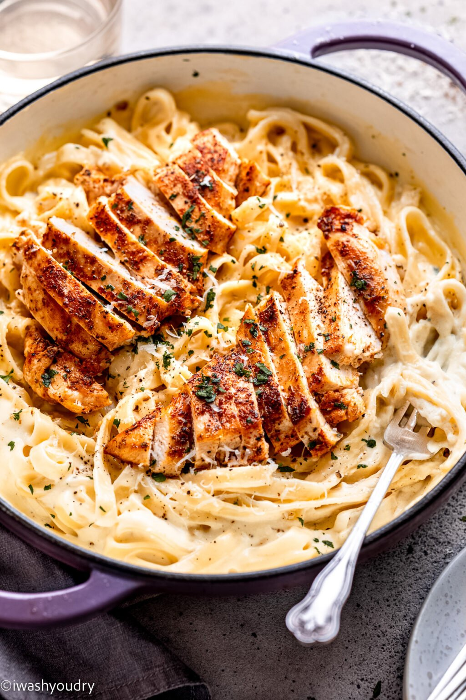

Chicken Alfedo

Description
Lightly seasoned pan-seared Boneless Chicken thighs over al
dente pasta tossed in a wine reduced white sauce
Ingredients
- Boneless skinless Chicken thighs
- Granulated Garlic
- Paprika
- Salt
- Pepper
- Heavy Cream
- Garlic
- Shallots
- White wine
- boxed pasta
Steps
- In a mixing bowl combine even parts Granulated garlic,Parpika,salt,and pepper, thoroughly mix and then coat chicken
- In a seperate pot prepare some water to boil your choice of boxed pasta (I also add a splash of salt and olive oil to my pasta water)
- While you wait for the water to come to a boil you can start to sear you chicken, this method usually requires med-high heat(note:completely cook chicken
to internal temp of 165 degrees
- When you are done searing your chicken add finely chopped garlic and shallots there should be burnt bits on the bottom of the pan prior to adding these ingredients
- By this time you pasta water should be boiling and you can add in your boxed pasta
- When the garlic and shallots are browned add your selection of white wine to the saucepan you want to continue to have a high heat to burn off any alcohol in the wine
- when the alcohol is burned off you can add heavy cream, salt and parpika to taste and continue stirring to avoid boil-overs
- Bring temperature back down to a simmer
- assuming your pasta is cooked we want to put a cup of the pasta water to the side and get rid of the excess water
after seperating the pata from the water we will add back the one cup of water and our cooked pasta into the saucepan containing our heavy cream concotion
- Continue folding pasta into sauce as your remove pan from heat
- at this point all there is left is to plate
- Take your favorite pasta bowl, grab a scoop of your finished pasta w/white sauce, then place your chicken over the pasta like a michelin starred chef